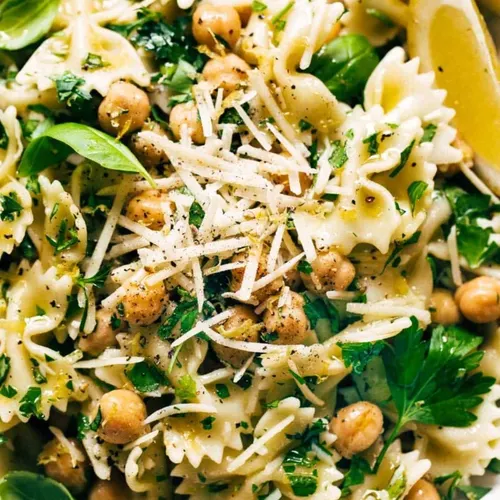

Pasta Carbonara

Ingredients
- 400g spaghetti
- 200g pancetta or guanciale, diced
- 4 large eggs
- 100g pecorino romano, grated
- 50g parmesan, grated
- Freshly ground black pepper
- Salt to taste
Instructions
- Bring a large pot of salted water to boil and cook spaghetti al dente.
- While pasta cooks, fry pancetta until crispy.
- In a bowl, whisk eggs with grated cheeses and black pepper.
- Drain pasta, reserving some cooking water.
- Quickly mix hot pasta with pancetta and its fat.
- Remove from heat and stir in egg mixture.
- Add pasta water as needed to create a creamy sauce.
- Season with salt and more black pepper.
- Serve immediately with extra grated cheese.
Chef's Tips
- Use the pasta cooking water to adjust sauce consistency.
- Work quickly to prevent eggs from scrambling.
- Authentic carbonara never uses cream.